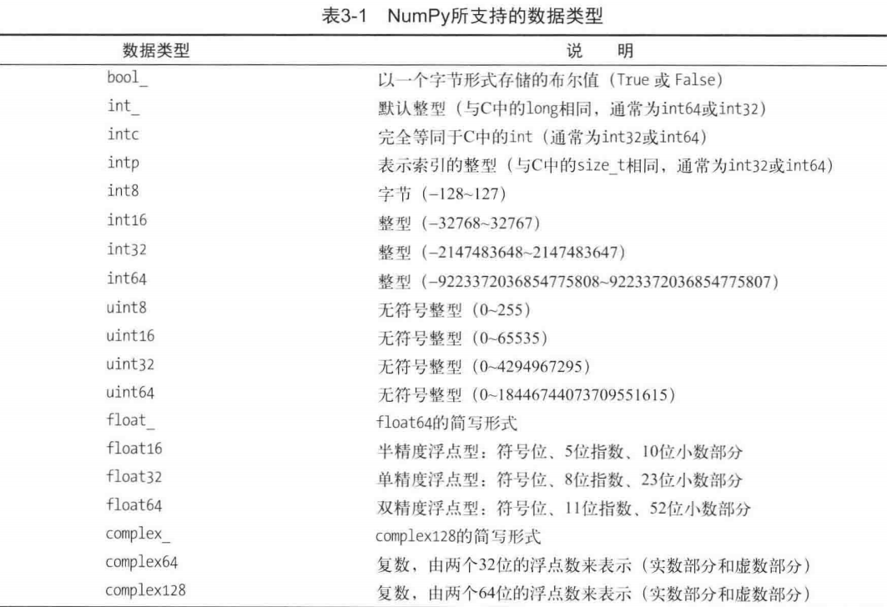

ndarray
整个NumPy库的基础是ndarray 对象。它是一种由同质元素组成的多维数组，元素数量是事先指定好的。同质指的是几乎所有元素的类型和大小都相同。事实上，数据类型由另外一个叫作dtype ( data-type，数据类型)的NumPy对象来指定;每个ndarray只有一种dtype类型。
数组的维数和元素数量由数组的型( shape)来确定，数组的型由N个正整数组成的元组来指定，元组的每个元素对应每一维的大小。数组的维统称为轴( axes )，轴的数量被称作秩( rank )。
NumPy数组的另一个特点是大小固定，也就是说，创建数组时一旦指定好大小，就不会再发生改变。
检测新创建的对象是否是ndarray：
1 | #只需要把新声明的变量传递给type()函数即可。 |
调用变量的dtype属性,可获知新建的ndarray属于哪种数据类型。
1 | a = np.array([1,2]) |
轴数量需要使用ndim属性，数组长度使用size属性，而数组的型要用shape属性。
1 | a.ndim |
创建数组
a. 使用array()函数，参数为单层或嵌套列表。
1
2
3
4c = np.array([[1，2，3],[4，5，6]])
c
# array([[1，2，3],
# [4，5，6]])b. array()函数还可以接收嵌套元组或元组列表作为参数。
1
2
3
4d = np.array(((1，2，3),(4，5，6)))
d
#array([[1，2，3],
# [4，5，6]])=c. 参数可以是由元组或列表组成的列表,其效果相同。
1
2
3
4
5e = np. array([(1,2,3),[4,5,6],(7,8,9)])
e
#array([[1,2,3],
# [4,5,6],
# [7,8,9]])数据类型

dtype选项：
array()函数可以接收多个参数。每个ndarray()对象都有一个与之相关联的dtype对象，该对象唯一定义了数组中每个元素的数据类型。array()函数默认根据列表或元素序列中各元素的数据类型，为ndarray()对象指定最适合的数据类型。但是，你可以用dtype选项作为函数array()的参数，明确指定dtype的类型。
1
2
3f = np. array([[1,2，3],[4,5，6]],dtype=complex)，f
# array([[1.+0.j,2.+0.j,3.+0.j],
# [4.+0.j,5.+0.j,6.+0.j]])自带的数组创建方法
NumPy库有几个函数能够生成包含初始值的N维数组，数组元素因函数而异。
zeros()函数能够生成由shape参数指定维度信息、元素均为零的数组。ones()函数与上述函数相似,生成一个各元素均为1的数组。（默认使用float64数据类型）
1
2
3
4
5
6
7
8np.zeros((3，3))
# array([[ o., 0., o.],
# [ 0., 0., 0.],
# [ o., o., o.]])
np.ones((3，3))
# array([[ 1., 1., 1.],
# [ 1., 1., 1.],
# [ 1., 1., 1.]])NumPy arange()函数特别有用。它根据传入的参数,按照特定规则，生成包含一个数值序列的数组。
1
2
3
4
5
6
7
8
9
10
11
12
13# 0-9 可自己指定参数，这时需要使用两个参数:第一个为起始值，第二个为结束值。
np.arange(0,10)
# array([0,1,2,3,4,5,6,7,8,9])
#如果为arange()函数指定了第三个参数，它表示序列中相邻两个值之间的差距有多大。(第三个参数还可以是浮点数)
np.arange(0,12,3)
# array([0,3,6,9])
# 创建二维数组 结合reshape()函数
np.arange(0，12).reshape(3，4)
# array([[0，1，2，3],
# [4，5，6，7],
# [8，9，10，11]])linspace()函数：它的前两个参数同样是用来指定序列的起始和结尾,但第三个参数不再表示相邻两个数字之间的距离，而是用来指定我们想把由开头和结尾两个数字所指定的范围分成几个部分。
1
2np.linspace(0,10,5)
array([ o., 2.5, 5., 7.5, 10. ])使用随机数填充数组，可以使用numpy.random模块的random（）函数，数组所包含的元素数量由参数指定。
1
2
3
4
5
6np.random.random(3)
# array([ 0.78610272，0.90630642，0.80007102])
np.random.random((3,3))
# array([[ 0.07878569,0.7176506 ,0.05662501],
# [ 0.82919021,0.80349121,0.30254079],
# [ 0.93347404,0.65868278,0.37379618]])